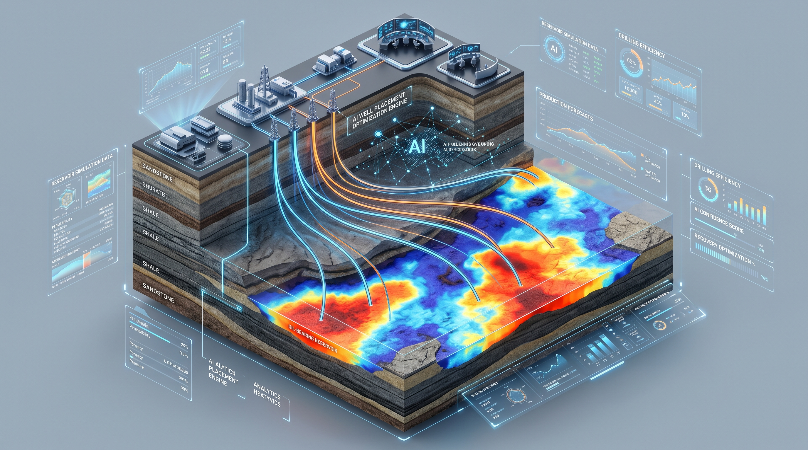
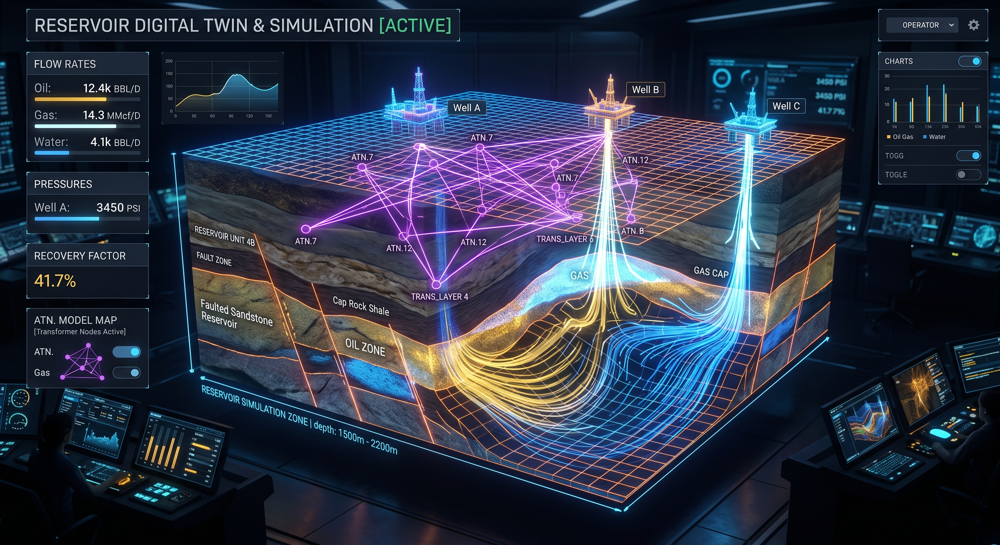

The proxy-manager (OctopusIA Proxy Model) is a state-of-the-art Deep Learning surrogate model designed to replace computationally intensive numerical reservoir simulations executed by CMG (Computer Modelling Group) IMEX within the Well Placement Optimization (WPO) pipeline of OctopusIA.
By accelerating full-physics reservoir predictions from hours on an HPC cluster to mere milliseconds on a single GPU, the proxy system enables genetic algorithms to evaluate tens of thousands of well layout configurations, maximizing the Net Present Value (NPV / VPL) of oil fields efficiently.
torch.nn.MultiheadAttention to model inter-well interference, drainage dynamics, and geological connectivity.ProxyEmbeddingLayer.ModelUnityManager.py across 4 training phases:
BuildProducersCurvesModel (Producer curves)BuildInjectorsCurvesModel (Injector curves)BuildFeaturesModel (Local dynamic reservoir state transition)BuildUnifiedModels (End-to-end unified inference ensemble)
*PERF (i,j,k)) directly from CMG include files (OctopusWells.inc) via regex.ReportManagerCMG.py triggers CMG's result.sh tool over binary outputs (.sr3 / .rwd) to serialize intermediate Python .pkl data.generate_h5_data.py reduces full reservoir grids ($4.5 \times 10^6$ cells) to lightweight local 3D sub-cubes:
h5_dynamic_base: Static topology and initial state at $t = 0$.h5_dynamic_times: Dynamic state tensors across discrete timesteps ($0, 1, 30, \dots, 7290$ days).The proxy model functions as a seamless drop-in replacement for CMG during optimization rounds:
cmg-inference mode, the proxy generates native-formatted CMG report files (*_proxy_cmg_output.result) matching all headers (TABLE NUMBER, WELL, DATE, rates, cumulative volumes). Economic evaluators read proxy output without modifying a single line of optimizer code.prob_selec) to ensure genetic roulette/tournament selection is preserved.